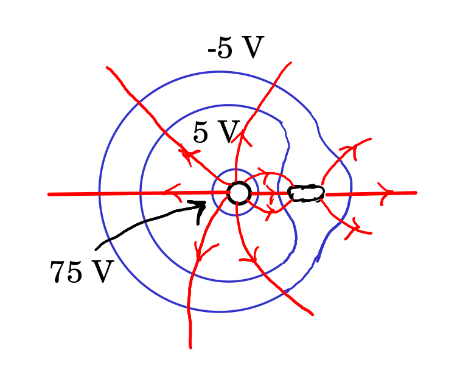

3. Potencial eletrostático
Problema 3.1
Demonstre a identidade:
Resolução. Em coordenadas cartesianas,
e o gradiente é,
Problema 3.2
Uma esfera metálica encontra-se próxima de outra peça metálica formada por um cilindro e duas semiesferas, como mostra a figura. Ambos objetos estão isolados de qualquer outro condutor. A esfera tem carga positiva () e a peça cilíndrica está completamente descarregada (). Arbitrando que o potencial da peça cilíndrica é zero, então o potencial da esfera é 80 V. Faça um desenho mostrando as duas peças, a distribuição de cargas, as linhas de campo nas duas peças e à sua volta, e as superfícies equipotenciais de -5 V, 5 V e 75 V.

Resolução. Há que ter em conta várias coisas:
-
•
As cargas distribuem-se nas superfícies dos dois condutores. No cilindro são induzidas cargas negativas no extremo mais próximo da esfera e o mesmo número de cargas positivas no extremo mais afastado. Na superfície da esfera há cargas positivas, mais concentradas no extremo próximo do cilindro.
-
•
Não há linhas de campo dentro da esfera nem dentro do cilindro. Há linhas de campo a começar na superfície da esfera e na superfície do cilindro, no extremo onde há carga positiva, e linhas de campo a terminar na superfície do cilindro, no extremo onde há carga negativa.
-
•
Todas as linhas de campo são perpendiculares à superfície do objeto onde começam ou terminam.
-
•
Nenhuma linha de campo pode começar num extremo do cilindro e terminar no outro, porque o potencial é constante no cilindro, enquanto que o potencial onde começa uma linha é sempre maior do que o potencial onde esta termina.
-
•
A equipotencial de V estará próxima da esfera, onde o potencial é V, e as equipotenciais de V e V estarão próximas do cilindro, onde o potencial é . No entanto, nenhuma dessas equipotenciais pode tocar nenhum dos objetos, porque estes têm valores de potencial diferentes de V, V e V.
-
•
Essas 3 equipotenciais não se podem cruzar entre si, por terem valores de potencial diferentes, e devem ser perpendiculares às linhas de campo elétrico, em todos os pontos onde se cruzam com elas.
O gráfico é aproximadamente o seguinte:

Também pode ser representado visto de longe:
Problema 3.3
O potencial elétrico a uma certa distância de uma carga pontual é 600 V (arbitrando potencial nulo no infinito) e o valor do campo elétrico é 200 N/C. Calcule a distância e o valor da carga.
Resolução. Usando as expressões do potencial e do módulo do campo elétrico de uma carga pontual, em unidades SI,
onde é a distância atá à carga. Dividindo uma equação pela outra temos:
e substituindo na equação do potencial,
o valor da carga é 200 nC e encontra-se a 3 m.
Problema 3.4
A figura representa as linhas de campo eletrostático de duas
partículas carregadas e separadas por uma distância de 7 cm. A razão
entre os valores das duas cargas é 4/9.
(a) Calcule a distância do ponto P às partículas.
(b) Sabendo que a carga da partícula no lado direito é de nC,
calcule o potencial no ponto P (arbitre no infinito).

Resolução. (a) No ponto P o campo total é nulo, ou seja, os campos das duas cargas são vetores opostos e com o mesmo módulo. Se e são as distâncias desde cada uma das cargas até P, a condição para que os módulos dos dois campos sejam iguais é:
e como cm, então, com as distâncias em cm:
e cm. A carga mais próxima de P ( à esquerda) é menor que a outra ( à direita).
(b) A carga da partícula no lado esquerdo obtém-se a partir da outra carga nC, usando a relação entre as cargas dada no enunciado:
e o potencial total no ponto P é (unidades SI):
Problema 3.5
Duas superfícies condutoras esféricas e concêntricas têm raios de 5 cm e 7 cm. A superfície menor tem carga total de 3 nC e a carga total na superfície maior é nC. Qual é a diferença de potencial entre as duas superfícies?
Resolução. O potencial produzido por uma esfera condutora, de raio e carga total , num ponto a uma distância do centro da esfera, é:
Nos pontos na superfície com cm o potencial é a soma dos potenciais produzidos pelas duas esferas. Pontos esses que estão fora da esfera de raio e dentro da esfera de raio cm. Como tal,
Nos pontos na superfície com cm, fora das duas esferas, o potencial total é:
Como tal, em unidades SI, a diferença de potencial é
Comentários: A diferença de potencial é também o integral do campo elétrico desde uma esfera até a outra, em qualquer percurso, por exemplo, na direção radial . Na região de integração o campo é devido unicamente à esfera menor, porque essa região está dentro da esfera maior. Como tal,
Problema 3.6
A figura na capa deste livro é a representação gráfica das linhas de campo e superfícies equipotenciais do seguinte potencial sobre o plano :
Explique a que tipo de sistema corresponde esse potencial e encontre a expressão do campo elétrico em qualquer ponto do plano .
Resolução. O termo é a distância até à origem, . Como o potencial de um dipolo na origem é
então o primeiro termo é no potencial corresponde a um dipolo, com momento dipolar,
O segundo termo no potencial, uma constante sobre a distância até à origem, corresponde ao potencial de uma carga pontual na origem. Como tal, o sistema é composto por um dipolo e uma carga pontual na origem.
O campo elétrico é menos o gradiente do potencial:
Problema 3.7
A figura mostra as superfícies equipotenciais de uma carga pontual no
interior de um campo elétrico uniforme . A grandes
distâncias da carga pontual as superfícies são planos paralelos
distanciados 8 cm.
(a) Calcule o módulo e a direção do campo externo
.
(b) Diga se a carga pontual é positiva ou negativa. Justifique.
(c) Qual é a direção da força sobre a carga pontual?
(d) Sabendo que a distância entre a carga pontual e o ponto P é 9
cm, calcule o valor da carga pontual.

Resolução. (a) O campo externo aponta para baixo (direção em que diminui o potencial) e tem módulo:
(b) A carga é negativa, porque há uma linha de campo que atravessa as superfícies equipotenciais de 90 V, 75 V, 60 V, 45 V e 30 V entrando logo na carga. Também, se não existisse a carga pontual, o potencial no ponto onde se encontra teria um valor entre 45 V e 60 V, mas com a carga pontual o potencial nesse ponto passa a ser menor que 30 V, ou seja, o potencial da carga pontual é negativo e a carga também.
(c) Como a carga é negativa, a força é na direção oposta ao campo externo, ou seja, para cima.
(d) No ponto P o campo total é nulo e, como tal, o módulo do campo produzido pela carga pontual deverá ser igual ao módulo do campo externo:
O valor da carga pontual é nC.
Problema 3.8
Demonstre que o campo elétrico , em que é uma constante e o vetor posição, é conservativo. Calcule o potencial correspondente a esse campo.
Resolução. As componentes cartesianas do campo são:
Todas as derivadas cruzadas são nulas e, portanto, iguais entre si:
a igualdade das derivadas cruzadas mostra que o campo é conservativo.
As três derivadas parciais do gradiente do potencial são:
Como tal o potencial é,
(mais uma constante arbitrária que foi escolhida igual a zero, fazendo com que o potencial seja nulo na origem).